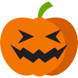
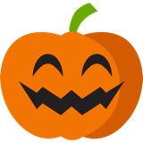
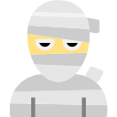

How to play
Trick or Treat is a free Halloween game that runs in your browser. Pumpkins and fake Halloween items fall down the board. Catch the pumpkins and dodge the fakes.



The goal
- Tap or click a pumpkin to score. Tap a fake and you lose points.
- Don't let pumpkins reach the bottom: each one you miss costs a life.
- Catch 10 pumpkins in a row while you are missing a heart and it comes back.
- The game ends when you run out of lives. Try to beat your best score.
- The more you catch, the harder it gets.
Levels and lives
- You start with 3 lives.
- There are 9 levels, one every 10 points. Items fall faster and appear more often as you climb, and from level 3 the wind starts pushing them sideways.
- Levels only go up: tapping a fake can lower your score, but never your level.
- At 0 points the fakes stay away, and tapping one costs nothing.
Controls
- Touch or mouse: tap or click.
- Keyboard play (computers only): switch it on before you start. Arrow keys pick an item (a light frame shows which), Enter catches it. The frame starts on the lowest item.
- P or Space: pause, and press again to resume.
- Esc: quit. The game freezes and asks you to confirm first.
These keys only work while a game is running.
The game also pauses by itself when you switch to another tab.
Accessibility
Two switches on the start screen make the game easier to play. Keyboard play (computers only, not offered on phones and tablets) lets you pick items with the arrow keys and catch them with Enter, so you don't need a mouse or touch. Slower pace slows down how fast items fall and how often they come, whatever level you reach. Your choice is kept on this device. Pause and quit work from the keyboard either way. Score and lives are read out to screen readers, the game pauses when you leave the tab, and the fog, level-up and shake effects switch off if your device asks for reduced motion (items still fall).
Questions
Is it free?
Yes. No ads, no accounts, nothing to download.
Does it work on my phone?
Yes, just tap the pumpkins.
Where is my best score kept?
In your browser, on this device only.